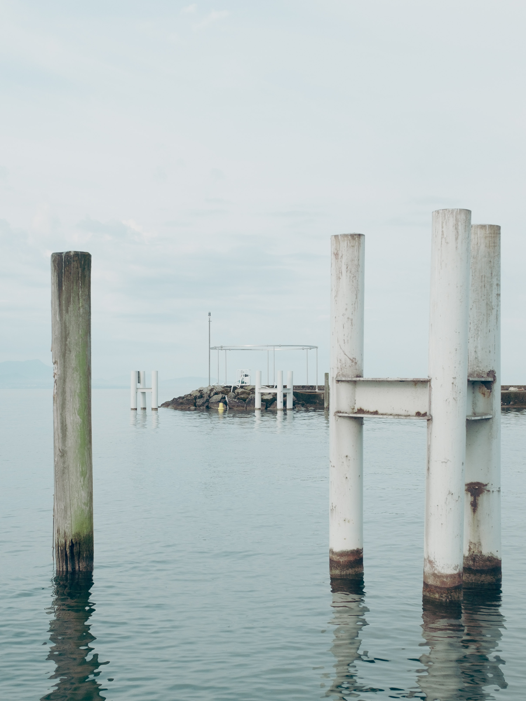
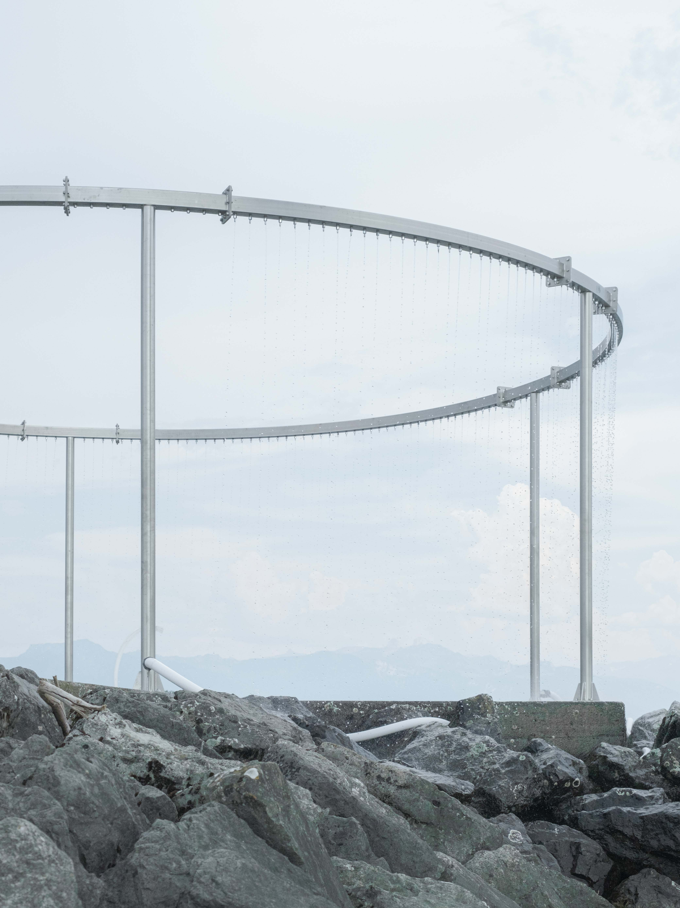
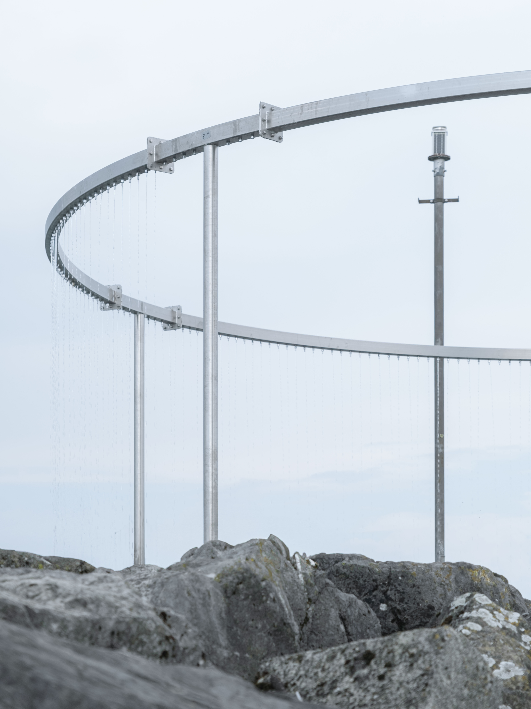
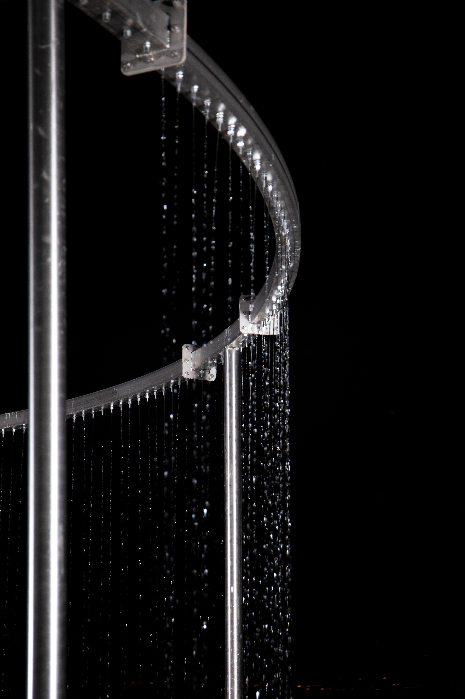

chaos
info@studiochaos.ch
@studiochaos.ch
@studiochaos.ch
rue de monthoux 38, 1201 genève
chemin du languedoc 24, 1004 lausanne
bisbe caçador 2, 08002 barcelona
chemin du languedoc 24, 1004 lausanne
bisbe caçador 2, 08002 barcelona
architecture office, based between geneva, lausanne and barcelona,
engaging in diverse problematics, scales and types, negotiating the
coexistence of contradictions, researching on the duality of nature / culture,
experimenting with the simultaneity of structure / infrastructure /
superstructure, investigating the reciprocity of beauty / performance
engaging in diverse problematics, scales and types, negotiating the
coexistence of contradictions, researching on the duality of nature / culture,
experimenting with the simultaneity of structure / infrastructure /
superstructure, investigating the reciprocity of beauty / performance
head, s. daniel & galliane zamarbide, t. asssistant 24
head, w. pipe dreams, workshop leader 24
head + camondo, w. climatic villa, t. assistant 24
head, s. philippe rahm, t. assistant 23
head, s. simon husslein, t. assistant 23-24
head, w. comte/meuwly, t. assistant 23
head, s. leonid slonimskiy, guest critic 23
epfl, s. adrien verschuere, t. assistant 19-21
epfl, s. koenraad dedobbeleer, t.assistant 18-19
head, s. simon husslein, t. assistant 23-24
head, w. comte/meuwly, t. assistant 23
head, s. leonid slonimskiy, guest critic 23
epfl, s. adrien verschuere, t. assistant 19-21
epfl, s. koenraad dedobbeleer, t.assistant 18-19
023
bouquetins hut
45.58N,7.31E
v1=(8+6)/2x17.6x3.6
Q=mcΔt
45.58N,7.31E
v1=(8+6)/2x17.6x3.6
Q=mcΔt
+ bureau barme
New envelope constructed around an existing wooden mountain hut, serving three primary purposes. Thermal resistance against extreme high-altitude weather conditions. Structural support and stability through an elevated wooden warren beam, taking full advantage of its static height. Creation of an inbetween to house the common program. The old hut is re-used to conceal all necessary services.
1/4
022
edelweiss house
46.12N,6.07E
v1=π((2.5+1)/2)*2x6.5
Q=hAΔt
46.12N,6.07E
v1=π((2.5+1)/2)*2x6.5
Q=hAΔt
+ HEAD – Genève
+ philippe rahm
+ students sawako bolch, mariia fomina, frida law, giada pettenati, sofia tapia buchelli , célia tourette, ana karina zepeda aranda, larisa coman
+ philippe rahm
+ students sawako bolch, mariia fomina, frida law, giada pettenati, sofia tapia buchelli , célia tourette, ana karina zepeda aranda, larisa coman
Climatic device constructed in the surroundings of HEAD – Genève School. The project aims to address the impact of climate change and its consequences on inhabited spaces. Focused on practical matters, it challenges the rise of temperatures while reducing greenhouse gas emissions by means of passive thermal architectural details. The result, an inverted greenhouse which provides cooler spaces using natural resources and energies provided by a warmer territory.
1/4




018
jardin d'éole
46.30N,6.37E
v1=π2.5*2x6.5
Tr=Tair-Kδe
46.30N,6.37E
v1=π2.5*2x6.5
Tr=Tair-Kδe
+ nessim kaufmann
+ mathieu lucas
+ mathieu lucas
Thermal refuge open to the lake. The site is subject to both thermal breezes and lake winds. A simple device is installed on the dock to offer a fresh destination and reveal the air currents. Le jardin d'Éole is a catalyst, a sensory compass rose where the great climatic dynamics of Lake Geneva can be perceived.
1/4

013
cretaux devices
46.25N,6.16E
d1=40x40
d2=40x35/2
d3=π40*2
To=Ce*kt+Ts
46.25N,6.16E
d1=40x40
d2=40x35/2
d3=π40*2
To=Ce*kt+Ts
+ pierre andrey
+ samedi snc
+ samedi snc
Series of devices speciyfng an existing undefined central void. By means of simple geometrical profiles of big dimensions, a new language is provided to build a series of compositions which communicate between them. This exercise provides an homogeneus overall while responding to the inmediate context of each piece.
1/4
012
plagué mayen
46.12N,7.25E
v1=7.8x7.8x7.8
v2=7.8x7.8x1.5/2
q=mcΔt
46.12N,7.25E
v1=7.8x7.8x7.8
v2=7.8x7.8x1.5/2
q=mcΔt
+ samedi snc
Contemporary reinterpretation of the traditional alpine construction, the mayen. Characterised by its stacked spaces, the traditional mayen is redefined in this new construction, providing three diverse conditions. A concrete bottom shelters the bedrooms, a top wood level defines two rooms, and the glassed in-between offers an all-year changing common area, which provides high thermal inertia to heat the house in winter and ensures good ventilation in collaboration with the vertical staircase in summer.
1/4
011
brander marti mayen
46.12N,7.22E
v1=7.8x6x2.6
v2=6x6x2.6
v3=6x6x2.5/2
Q=KΔT/2
46.12N,7.22E
v1=7.8x6x2.6
v2=6x6x2.6
v3=6x6x2.5/2
Q=KΔT/2
+ samedi snc
Renovation of an existing mayen. The original constructing elements are demolished carefully to be reused in the new spaces. A series of interventions at different levels clarify the purpose of each room and the relations between them. The new interior provides three diverse conditions in relation to each level and its construction characteristics.
1/4